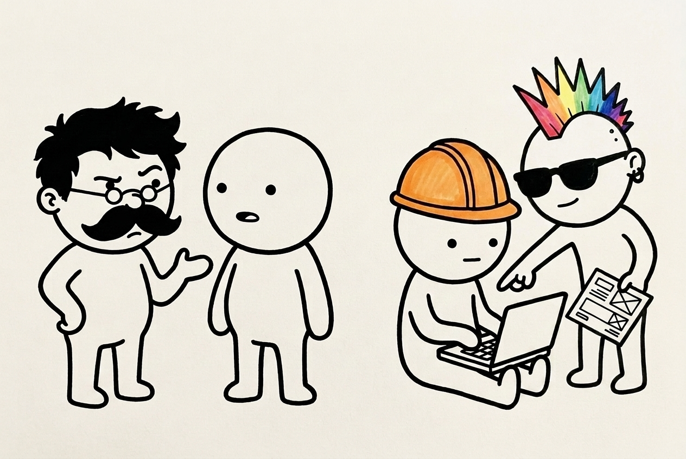
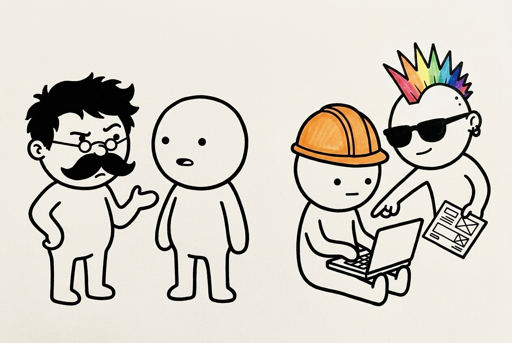

Toda vez que eu tentava gerar uma imagem com mais de um personagem meu, a IA misturava tudo. O programador nascia com a barba do crítico, o crítico aparecia de óculos claros, e no final ninguém parecia quem deveria ser. Era o clássico vazamento de atributos na geração de imagem.
Depois de bater a cabeça com vários testes, finalmente consegui acertar o fluxo. E o segredo não estava em um prompt milagroso gigante, mas em saber direcionar os limites de cada figura no papel.
i. negações semânticas o truque de falar o que eles não têm
A primeira parede que bati foi a mistura de rostos. O Nit (o crítico) tem aquele cabelo bagunçado e o bigodão de morsa clássico do Nietzsche. Mas quando eu pedia para ele colaborar com o Codi (o coder) no mesmo prompt, a IA enfiava o bigodão e o cabelo do Nit por baixo do capacete de obra do Codi.
Pensa. O modelo de imagem lê tudo junto e acha que todo mundo na cena compartilha das mesmas características físicas.
A sacada foi criar barreiras negativas explícitas no próprio texto. Em vez de só descrever cada um, passei a detalhar o que cada um não tem de jeito nenhum:
- → Uli: totalmente careca, sem cabelo, sem óculos, sem bigode.
- → Lilo: careca exceto pelo moicano, óculos escuros, sem bigode.
- → Codi: totalmente careca, sem bigode, usando só o capacete de obra laranja.
- → Nit: o único com cabelo e bigode farto.
Com essa negação forçada na descrição de cada um, a IA parou de cruzar as linhas e cada boneco manteve sua própria cara.

ii. mittens e stubs o bicho de sete cabeças dos dedos
Outro problema clássico: desenhar dedos. A regra visual dos meus agentes é que Uli, Nit e Codi não têm dedos nas mãos — eles usam stubs arredondados, tipo mitten. O único que tem dedos de forma proposital na sua identidade visual é o Lilo. Mas a IA desrespeitou isso e meteu dedos e unhas humanas realistas nas mãos do Codi só porque ele estava no teclado.
Aprendi na marra que verbos de ação física acionam o viés humano do modelo de imagem. Se você diz que ele está "digitando", a IA puxa da memória dela o conceito de "dedos digitando".
A saída foi descrever a pose de forma estática e passiva. O prompt virou: resting simple rounded hand stubs on a laptop (apoiando as mãos stubs no laptop), e as mãos como completely smooth rounded circles with absolutely no fingers, no thumbs. Pronto. Mantivemos o Codi sem dedos e a Lilo com os dela.
iii. image-to-image construir sobre o que deu certo
Por fim, a última virada foi parar de tentar gerar a cena do zero a cada pequeno ajuste. Quando consegui uma pose excelente (o Nit e o Uli conversando, e o Codi e a Lilo na máquina), o modelo esqueceu de desenhar as pernas da Lilo no fluxo 2D, deixando-a flutuando cortada.
Em vez de jogar tudo fora e tentar reescrever, usei a imagem anterior diretamente como referência de entrada (Image-to-Image) e pedi apenas o delta da modificação: "This image is a direct modification of the input reference. The only change is that Lilo must be drawn in full body, standing on visible legs."

iv. memória viva do vault a importância de ter documentos e imagens de referência
Nada disso seria possível se eu não tivesse estruturado a memória da marca antes. Para conseguir usar o Image-to-Image com eficácia, eu precisei de um repositório centralizado de assets de referência e fichas dos personagens.
Sem ter as imagens canônicas salvas e as fichas de especificação mapeadas, a IA não tem de onde puxar a âncora visual. Ter os arquivos de base (uli.md, codi.md, nit.md e suas respectivas imagens de traço limpo) no vault é o que garante que qualquer nova geração consiga se manter on-brand, mesmo quando o modelo tenta improvisar.
Não é mágica, é saber cercar o modelo de imagem de todos os lados para ele não improvisar onde não deve. O processo é feio, dá ida e volta, mas no fim, o resultado fica exatamente no traço que a marca pede.
Quem quer tem que querer.